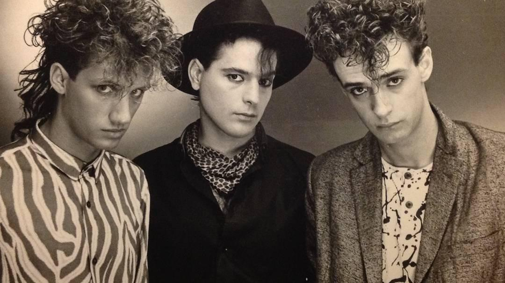
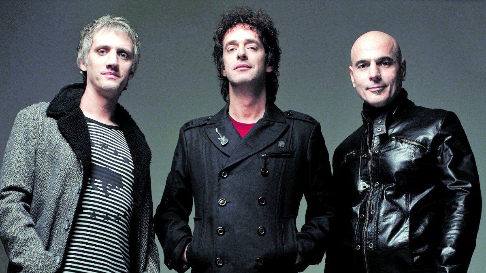
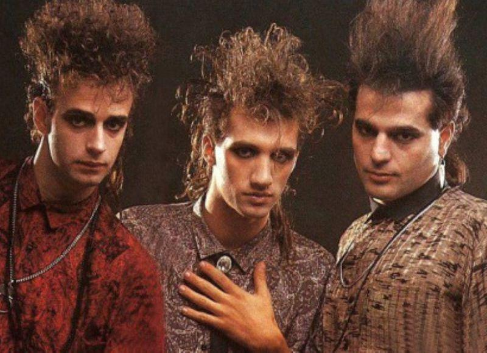
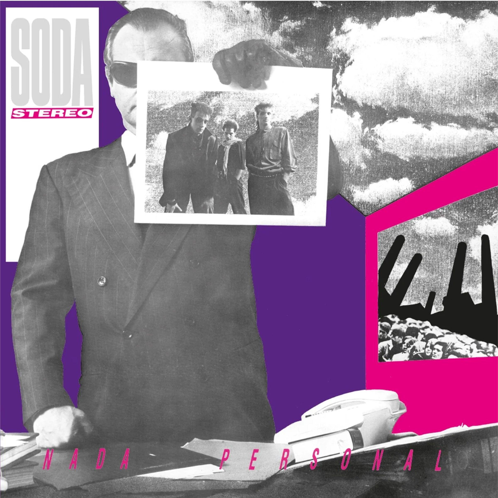
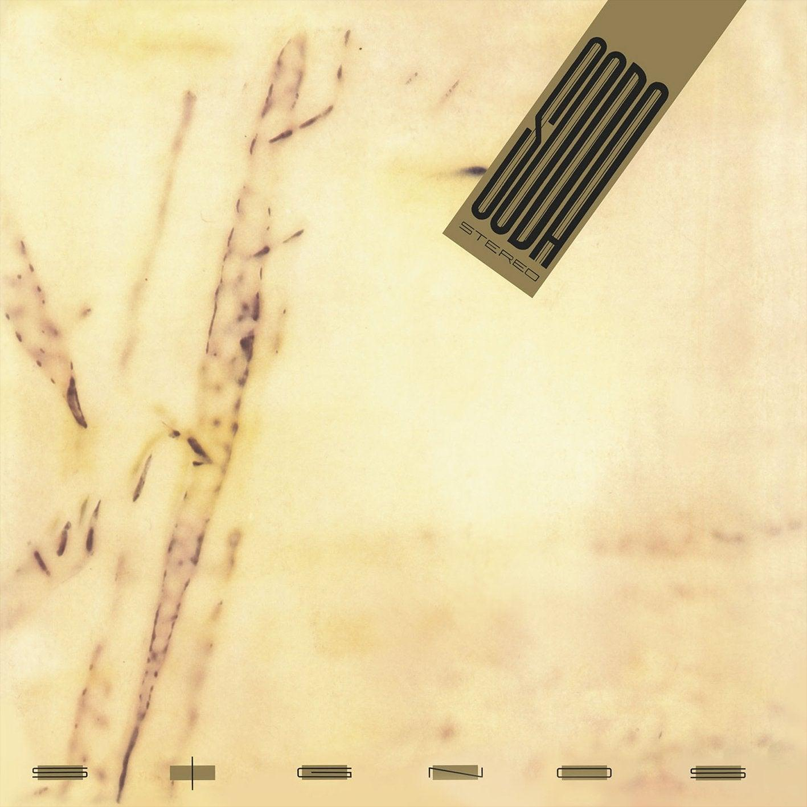
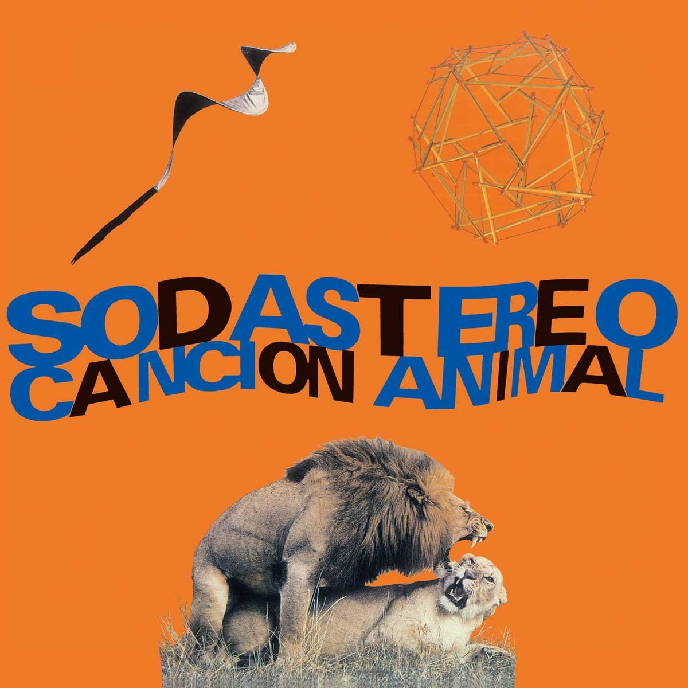

VOZ Y GUITARRA
GUSTAVO CERATI
Vocalista y guitarrista. Fue una de las figuras fundamentales en la composición y dirección musical de la banda.

EL SONIDO DE UNA GENERACIÓN
Una de las bandas más influyentes de la historia del rock en español.
DESCUBRIR LA BANDAEL COMIENZO DE UNA LEYENDA

Soda Stereo fue una banda argentina de rock formada en Buenos Aires en 1982. Estuvo integrada por Gustavo Cerati, Zeta Bosio y Charly Alberti.
Con una propuesta musical innovadora, la banda consiguió convertirse en uno de los principales referentes del rock latinoamericano.
Su música combinó diferentes estilos, como el new wave, el rock alternativo y el pop rock, construyendo una identidad sonora única.
Aunque su etapa original terminó en 1997, su legado continúa influyendo en nuevas generaciones.
LOS PROTAGONISTAS
Vocalista y guitarrista. Fue una de las figuras fundamentales en la composición y dirección musical de la banda.

Bajista y miembro fundador. Su trabajo fue esencial para construir el sonido característico de Soda Stereo.
Baterista y miembro fundador. Su estilo rítmico acompañó la evolución musical del grupo.
EL LEGADO MUSICAL



LAS CANCIONES QUE MARCARON UNA ÉPOCA
LA MÚSICA TRASCIENDE EL TIEMPO